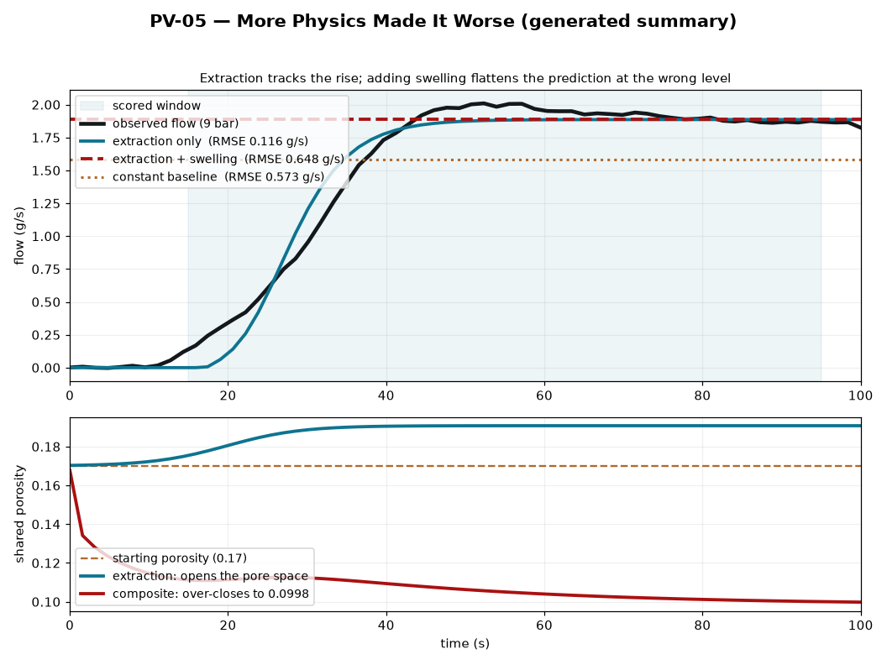

Loading the generated data…
Summary (JavaScript is off)
This page normally lets you add model components one at a time and watch the fit change. With JavaScript disabled, the complete result — every number and caveat — is in the generated static text summary and the summary image below. You can also download the generated data.
{kind=link}

1 · The target and the simplest baseline
An espresso shot's flow rises as the puck opens. The observed 9-bar flow is our target. A constant is deliberately the simplest possible prediction — the minimum benchmark a more complex mechanism should beat. Its error over the ·–· s window is · g/s at a level of · g/s.
Build the model, one component at a time
·
Show the numbers behind the flow plot (text table)
Show the numbers behind the porosity plot (text table)
2 · Extraction-only improves the fit
The time-varying extraction branch follows the rising target far more closely: its error is
· g/s — about
·× better than the
constant, with · free parameters. An
independent producer (degeneracy_rmse) reproduces it at
· g/s.
A lower residual does not prove that this mechanism is uniquely identified or physically correct. This is verification against one trace, not independent validation.
3 · Add the tested swelling composition
Both branches modify the same porosity state. Adding an imported swelling branch over-closes that state — it drops to · (below the · reference). The dissolution-driven opening term floors, so the composite prediction decouples from the rise and its error climbs to · g/s — ·× the constant baseline and ·× the extraction-only model.
This does not mean the swelling component is universally invalid. It means this composition — these two branches through one shared state on a saturated pre-wet rig — is incompatible.
4 · Model components need contracts
Before two components are combined, the composition should answer:
More equations are not automatically more explanation. A model composition must earn its interfaces.
What this does not prove
- It does not show that physics is universally harmful, or that a simpler model is always true.
- It does not show that swelling is absent from real espresso pucks — only that this shared-porosity composition fails on this rig.
- It does not prove the extraction-only mechanism is correct; a good fit here is in-sample verification, not independent validation.
- It is not coupled into the Guided Espresso Pull, and adds no new fit.
Scope. ·
Caveat. ·
Trace every number
- Synthesis card: brewer2026_coupled_kappa_t; poroelastic model: waszkiewicz2025; swelling model: mo2023_2.
- Producers:
puckworks.harness.kappa_t_ladder,coupled_kappa_t.degeneracy_rmse / composition_residual / simulate. - Public claim:
PV-05in the generated claim cards. - Generated data: data.json · static text summary.
- Reproduce:
python -m puckworks.public.model_composition verify